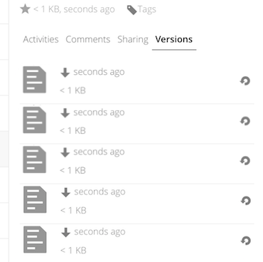

Správa verzí
Nextcloud podporuje jednoduchý systém pro správu verzí souborů. Verzování vytváří zálohy souborů, které jsou přístupné prostřednictvím panelu Verze v postranním panelu Podrobnosti. Tento panel obsahuje historii souborů, ve které můžete soubor vrátit do stavu k libovolné předchozí verzi. Změny učiněné v intervalech delších, než dvě minuty jsou uloženy v data/[uzivatel]/files_versions*.

Pro obnovení konkrétní verze souboru, klikněte na kruhovou šipku vlevo. Pro jeho stažení klikněte na časové razítko.
Aplikace pro správu verzí automaticky ukončuje platnost starých verzí a tím zajišťuje, že uživateli nedojde místo. Staré verze jsou mazány podle tohoto vzoru:
Po dobu první sekundy je uchovávána jedna verze
V prvních 10 sekundách Nextcloud uchovává jednu verzi z každých dvou sekund.
Po první minutu Nextcloud uchovává jednu verzi z každých deseti sekund
Po dobu první hodiny Nextcloud uchovává jednu verzi z každé minuty
Po dobu prvních 24 hodin Nextcloud uchovává jednu verzi za každou hodinu
Po prvních 30 dnů Nextcloud uchovává jednu verzi z každého dne
Po dobu prvních 30 dnů Nextcloud uchovává jednu verzi z každého týdne
Verze jsou upraveny podle tohoto vzoru pokaždé, když je vytvořená nová verze.
Aplikace pro správu verzí nikdy nepoužije více než 50% volného místa, které má uživatel k dispozici. Pokud objem uložených verzí tento limit překročí, Nextcloud bude mazat nejstarší verze tak dlouho, až opět dostojí limitu volného místa.